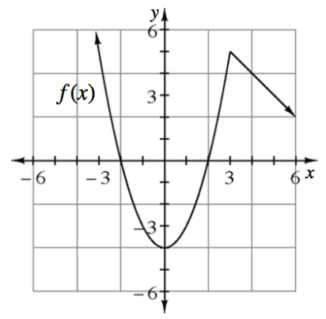
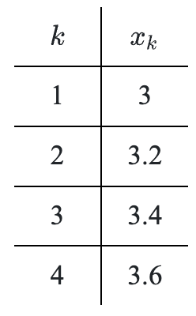
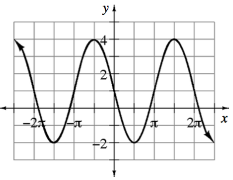

Geoff and Max are college roommates. Geoff can clean their apartment in \(2.5\) hours and Max can clean their apartment in \(3.25\) hours. How long will it take Max and Geoff to clean their apartment together?
The sum of two positive numbers is \(9\). What is the maximum product that will result from the first number and the square of the second number?
Delbert wants to make \(200\) ml of a \(5\%\) alcohol solution by mixing a \(3\%\) alcohol solution with a \(10\%\) alcohol solution. What quantities of each of the two solutions does he need to use?
On a recent \(250\)-mile trip, Felicia averages \(50\) mph over the first \(125\) miles. What should be her average speed for the second half of her trip, if she wants to average \(60\) mph over the whole trip?
The Widget Co. currently sells \(800\) widgets per week for a price of \(\$7.00\) each. Their market research indicates that for each \(\$0.50\) increase in price they will sell \(25\) fewer widgets per week. What price should they charge to maximize sales income?
When circuits are created, electricians must take into consideration the electrical resistance to determine the appropriate gauge (diameter) of wire to use in a given situation. For example, household circuits are often wired with two different gauges of wire to accommodate different electrical needs such as light bulbs versus microwave ovens. The resistance of a wire varies directly as its length and inversely as the square of twice its radius. A wire \(2.4\) m long and \(0.004\) m in diameter has a resistance of \(150\) ohms. What is the diameter of a similar wire that has a resistance of \(90\) ohms and is \(1.2\) m long?
You may have an image of Sir Isaac Newton sitting under a tree and after being hit on the head by an apple he suddenly “discovered” the Law of Universal Gravitation. In fact, the theory was a result of years worth of research, which in turn was based on centuries of accumulated knowledge. He is credited with determining that the following relationship is universal. The gravitational attraction between two objects varies jointly with their masses (\(m_1\) and \(m_2\)) and inversely with the square of the distance (\(d\)) between them. By what percent does the force of gravitational attraction change if one mass is increased by \(20\%\), the other mass decreased by \(20\%\), and the separation is reduced by \(25\%\)?
The sum of two numbers is \(60\). Determine the numbers so that their product is the greatest.
Show by division that \(\large \frac { 2 x ^ { 3 } - 3 x ^ { 2 } - 6 } { x - 2 }\) \(=2x^2+x+2\ -\frac{2}{x-2}\).
Algebraically solve the system of equations and state the method you used. Check your answer graphically.
\(y=3x^2+5x-2\)
\(y=2x+4\)
Given the graph of \(y=f(x)\), sketch each of the following transformations.
\(y=-f(x)\)
\(y=f(x+2)-1\)
\(y=\frac{1}{2}f\left(x\right)\)

Simplify: \((a^{-1}-b^{-1})^{-1}\).
“I’m thinking of a number,” said Raoul. “When I raise it to the sixth power, I get ninety.Write my number using the root symbol.
Solve: \(\frac { \sqrt { 8 m ^ { 2 } } } { \sqrt { 2 m } } = 6\)
As the connected complexity of mathematical concepts evolve, your mathematical knowledge evolves as well. Previous knowledge provides the necessary skills to acquire new learning. If necessary, review the Inverse Functions Skill Builder, to strengthen your understanding of this topic.
For each of the following functions, restrict its domain (if necessary) so that it is invertible. Then write an equation for the inverse.
\(f(x)=8x^2+10\)
\(g(x)=\)\((x-1)^3-3\)
\(h\left(x\right)=\)\(-2\sqrt{x+6}-9\)
If \(y\) varies inversely as \(x+6\) and \(y=1\) when \(x=1\), complete the following problems.
Express \(y\) as a function of \(x\).
What is the value \(y\) when \(x=0\)?
Compute the following operations with rational expressions.
\(\frac { x + 2 } { x - 1 } + \frac { x } { x + 1 }\)
\(\frac { c } { a - b } + \frac { c } { a + b }\)
\(\frac { x + 2 } { 3 x } - \frac { x + 1 } { 6 x ^ { 2 } }\)
Factor \((2x-1)\) out of each expression and then simplify.
\((2x-1)^2+3(2x-1)\)
\((2x-1)^3-4(2x-1)^2\)
\((2x-1)^5+4x(2x-1)^3\)
Use the table shown to write an equation for \(x_k\) in terms of \(k\).

Solve \(x^n=y\) for \(x\) by taking the \(n^{\text{th}}\) root of both sides.
Write one equation in terms of sine and one equation in terms of cosine for the graph shown shown.

Let \(g ( x ) = \left\{ \begin{array} { l l l } { 5 } & { \text { if } } & { 2 \leq x \leq 4 } \\ { 3 } & { \text { if } } & { 4 < x \leq 5 } \\ { 8 } & { \text { if } } & { 5 < x \leq 9 } \end{array} \right.\).
Sketch the graph of \(y=g(x)\) and shade the area between \(y=g(x)\) and the \(x\)-axis.
The function, \(g\), is an example of a step function. Why do you think it is called a step function?
Calculate the area of the shaded region.
Rewrite the following fraction as a sum of fractions, with linear denominators, by using partial fraction decomposition.
\(\frac { 5 x + 1 } { ( x + 2 ) ( x - 1 ) }\)